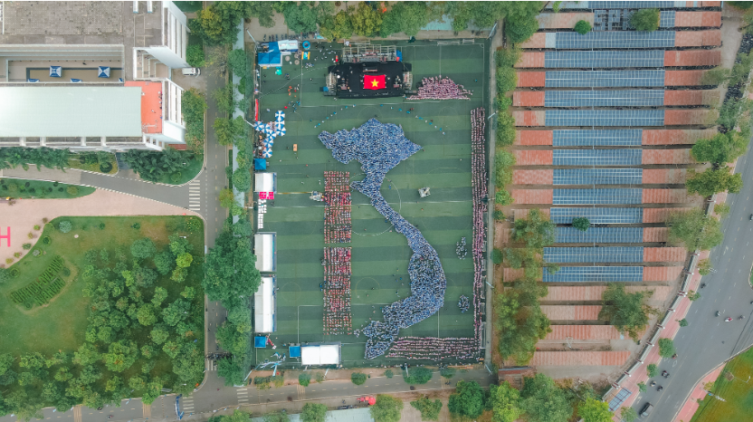

Tra cứu giờ trống
Chọn ngày, khoảng giờ và loại sân bóng phù hợp với đội của bạn.
Xem sân bóng, tra cứu khoảng giờ còn trống và tìm đường đến sân FC-UTE. Bạn có thể tìm sân trước khi đăng nhập.

Đang tải danh mục sân…
Trạng thái hiện tại của sân khác với lịch trống theo ngày và giờ bạn chọn.
Sân bóng ĐH SPKT TP.HCM, trong khuôn viên trường. Điểm đến được đặt tại vị trí sân bóng theo liên kết của nhóm.
Vị trí chỉ được yêu cầu khi bạn bấm nút. Bạn cũng có thể nhập điểm xuất phát trong Google Maps.
Mở đường đi từ vị trí đã chọn ↗Nếu bản đồ không tải, dùng nút Mở Google Maps ở bên cạnh.
Chọn ngày, khoảng giờ và loại sân bóng phù hợp với đội của bạn.
Đăng nhập hoặc đăng ký tài khoản để tiếp tục tại màn hình đặt sân.
Xem trạng thái booking và hóa đơn trong tài khoản của bạn.